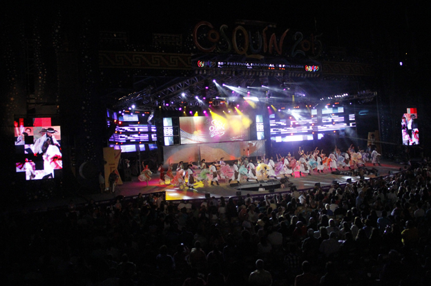
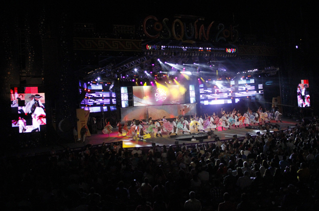

Cosquin
Cosquín se deja descubrir entre diversos atractivos culturales y naturales
A puro folcklore y un río que es un protagonista serrano

El cielo, el mejor boliche de Cosquín. Aquí encontrarás la música más variada y actual, desde cumbia hasta rock, pasando por reggaetón y pop. Disfruta de nuestras ofertas en tragos y cervezas, y participa en nuestros sorteos y concursos. El cielo es el lugar ideal para pasar una noche inolvidable.
Dirección: Av. San Martin 843, X5166 Cosquín, Córdoba
Teléfono: 03541 64-4368
Instagram: @elcielocosquin


no puedes perderte Euphoria Disco Pub, el boliche más divertido y animado de Cosquín. Aquí podrás disfrutar de la mejor música electrónica, pop y latina, con los DJs más reconocidos de la zona.
Dirección: Amadeo Sabattini 729, Cosquín, Córdoba, Argentina
Teléfono: 02211548855
Instagram: @euphoriadiscopub
Palermo resto bar cosquin es un lugar ideal para disfrutar de una noche divertida y variada. Puedes elegir entre una amplia carta de platos mexicanos, pizzas, hamburguesas, ensaladas y más, acompañados de cervezas artesanales, tragos y cócteles.
Facebook: Palermo resto bar - disco
Horario:
Dirección: Cosquín, Córdoba
Teléfono: 03541589440
Horario de atención: 7 A 13 HS.
Dirección: armando Tejeda Gomez, Cosquín, Córdoba
Teléfono: 3547-642556
Horario de atención: 7 a 13HS
Dirección: Presidente Derqui, Araoz Alfaro 742
Teléfono: 03541 45-4159
Horario de atención: abierto las 24 hs

El Hotel Continental de Cosquín es un lugar encantador ubicado en el corazón de la pintoresca localidad de Cosquín. Con su fachada de estilo colonial y su ambiente acogedor, este hotel ofrece a sus huéspedes una experiencia inolvidable.
Dirección: San Martin y Sabatin, 5166 Cosquín
Teléfono: 03547 14-93-9993
Página Web: Hotel continental Cosquín
Precio: $29.904
Servicios:


Las rocas cabañas se caracterizan por su forma distintiva, que se asemeja a pequeñas cabañas o refugios tallados por la naturaleza misma. Estas formaciones rocosas, erosionadas a lo largo de millones de años por la acción del viento y el agua, presentan una combinación única de colores y texturas que les otorgan un encanto especial.
Dirección:Santa fe 372 Molinari, 5166 Cosquín, Argentina
Teléfono:03547 53-2265
Página Web: La Roca Cabañas
Instagram: @Larocacabañas
Facebook: La roca cabañas
Precio: $29.733
Servicios:
Con una arquitectura tradicional y encanto rústico, el Hospedaje Cerros Dorados ofrece una experiencia única a sus huéspedes. Sus habitaciones están elegantemente decoradas y equipadas con todas las comodidades modernas que se necesitan para una estadía placentera. Desde amplias camas y ropa de cama de calidad hasta baños privados impecables y vistas impresionantes, cada detalle ha sido cuidadosamente diseñado para garantizar el máximo confort./p>
Dirección: 1296 Avenida San Martin, 5166 Cosquín, Argentina
Teléfono: 03547 53-2265
Instagram: @hotelcerrodorado
Facebook: Hospedaje Cerros Dorados
Precio: $5.773
Servicios:
El Camin Cosquín Museo es un lugar fascinante que combina la historia, la cultura y la naturaleza en un solo espacio. Ubicado en la encantadora ciudad de Cosquín, en la provincia de Córdoba, Argentina, este museo se erige como una ventana al pasado y al presente de la región. Al ingresar al Camin Cosquín Museo, te verás inmerso en un entorno encantador rodeado de exuberante vegetación y una arquitectura acogedora. El museo se encuentra en un edificio de estilo colonial, que ha sido cuidadosamente restaurado para preservar su belleza original y resaltar su valor histórico.
Horario:
Un buen punto para empezar el recorrido es el Museo del Artesano, un espacio que cobija las artesanías elaboradas por los orfebres de la zona. Hay piezas de distintos materiales como lana, madera, cueros metales y piedras.
Dirección: Tucumán 400, Cosquín, Córdoba
Teléfono: +54 03547 42-7778
Horario:
El parque se extiende a lo largo de amplias áreas verdes, con árboles y plantas que brindan un ambiente sereno y relajante. Los senderos te invitan a dar paseos tranquilos y disfrutar de la belleza natural que lo rodea.
Un lugar muy lindo para pasar en familia o con amigos. Lo que pagas lo vale. Recomendable. Nadie te molesta y podes dejar las cosas sin problema. Tiene varias pileta con diferentes profundidad. Lugar con asador y mesas.
Este parque se destaca por su abundante vegetación, su rica biodiversidad y sus paisajes impresionantes, lo que lo convierte en un refugio perfecto para los amantes de la naturaleza y los entusiastas del aire libre.
El Restaurante Parrilla Yiyo es un lugar destacado para los amantes de la carne y la gastronomía en la ciudad de Cosquín, en la provincia de Córdoba, Argentina. Este acogedor restaurante se especializa en ofrecer deliciosas parrilladas y platos tradicionales argentinos que satisfacen los paladares más exigentes. Al entrar al Restaurante Parrilla Yiyo, te recibirán con un ambiente cálido y familiar. El lugar está decorado con un estilo rústico y acogedor, creando un ambiente perfecto para disfrutar de una comida placentera y relajada.
Dirección:ruta nacional 38, cosquin, cordoba
Teléfono: 03541451129
Facebook: parilla - restaurante rio cosquin
Horario:
Rango De Precio: $ 1.850 - $ 5.700

"Desde la Encrucijada nuestro mayor interés es que se vayan del lugar habiendo disfrutado de buenos momentos!" te reciben con un ambiente cálido y familiar.Con un ambiente perfecto para disfrutar de una comida placentera y relajada.
Dirección: Maria Eloisa s/n C.P.: 5166, X5166 Cosquín, Córdoba
Teléfono: 03515112233
Página Web:minube.com.ar
Instagram: @laencruciada.cba
Facebook: La Encrucijada De Supaj - Ñuñu
Horario:
Rango De Precio: $ 1.850 - $ 6.700
Disfruta de uno de los mejores placeres de esta vida: unos sorprendentes papas bravas, una casera paella y unas generosas gambas al ajillo en agradable compañía. Este lugar te agradará con su perfectamente elaborada crema catalana, sus atrayentes natillas y su delicado tiramisú.
Dirección: 5166, J. C. Gerónico 813, X5166 Cosquín, Córdoba
Teléfono: 03541581198
Facebook: VarSovia Resto Bar
instagram: @varsovia_restobar_cosquin
Horario:
Dirección: Int. Ternengo
Teléfono: 3541 15-59-4192
Puntuacion: 3.3/5
Dirección: Mallín 1777
Teléfono: 3541 45-2877
Puntuacion: 3.8/5
Dirección: Av San Martín - 1150
Teléfono: (03541) 45 - 0300
puntuacion: 3.6/5

 

El Centro Municipal de Congresos y Convenciones, funciona en un antiguo edificio, donde originalmente existió el primer Mercado de Abasto de Cosquín. Tras sucesivas reformas, se ha convertido en un excelente espacio para la realización de espectáculos y eventos culturales.
Horario:
Cuenta con una capacidad demarcada por 8.000 cómodas butacas, distribuidas en forma de abanico al aire libre; un monumental escenario semitechado que lleva el nombre de "ATAHUALPA YUPANQUI" en homenaje al gran poeta y cantor de la música nativa; vestuarios y baños públicos.
Horario:
Arte e integración - grupos para niños, niñas, jóvenes y adultos. Grupo Taller de Teatro Cosquín. Es el teatro del pueblo de Cosquín. Una de las herencias, junto con la Biblioteca "Nicolás Avellaneda" fundados por lis anarquistas, que llegaron de Europa.
Horario: